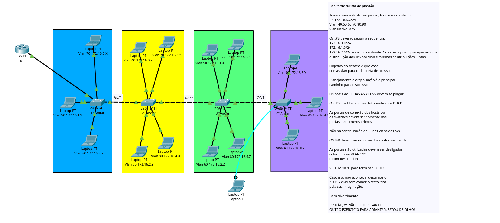

| Projeto: Arquitetura de Rede Corporativa Vertical (Andares 1 a 4) | Status: Homologado / Em Execução |
| Autor: Engenharia de Redes | Data de Refotografia: Junho de 2026 |
1. Visão Geral e Escopo de Distribuição de IPs
Este documento consolida a architecture física e lógica desenvolvida para o edifício corporativo, segmentando os departamentos por andares através do uso de Redes Locais Virtuais (VLANs). O roteamento entre as sub-redes é centralizado no roteador principal R1 operando em modo Router-on-a-Stick, responsável também pela atribuição dinâmica de endereçamento via DHCP.
A tabela de distribuição abaixo demonstra o planejamento linear adotado para as sub-redes, seguindo sequencialmente os blocos base conforme estipulado pelo projeto normativo:
| VLAN | Departamento | Sub-rede IP | Máscara de Rede | Gateway Padrão | Métricas / Limite da Faixa |
|---|---|---|---|---|---|
| 40 | Marketing / Comunicação | 172.16.0.0/24 | 255.255.255.0 | 172.16.0.1 | 172.16.0.2 a 172.16.0.254 |
| 50 | Vendas / Operações | 172.16.1.0/24 | 255.255.255.0 | 172.16.1.1 | 172.16.1.2 a 172.16.1.254 |
| 60 | TI / Desenvolvimento | 172.16.2.0/24 | 255.255.255.0 | 172.16.2.1 | 172.16.2.2 a 172.16.2.254 |
| 70 | Finanças / Contabilidade | 172.16.3.0/24 | 255.255.255.0 | 172.16.3.1 | 172.16.3.2 a 172.16.3.254 |
| 80 | Diretoria / Executivo | 172.16.4.0/24 | 255.255.255.0 | 172.16.4.1 | 172.16.4.2 a 172.16.4.254 |
| 90 | Visitantes / Guest | 172.16.5.0/24 | 255.255.255.0 | 172.16.5.1 | 172.16.5.2 a 172.16.5.254 |
| 875 | VLAN Nativa (Controle) | - | - | - | Tráfego não etiquetado (Untagged) |
| 999 | Segurança (Não Utilizadas) | - | - | - | Buraco Negro (Blackhole VLAN) |
Imagem Oficial da Topologia do Laboratório

2. Diretrizes de Segurança e Hardening de Ativos
Como requisito mandatório de proteção lógica da infraestrutura corporativa, foi estabelecido o controle de barreiras de acesso em duas camadas operacionais nos dispositivos. Todas as senhas de texto plano sofrem ofuscação automática no arquivo de configuração do sistema operacional Cisco IOS.
Mapeamento de Credenciais Administrativas
-
Acesso 1 (Nível de Usuário - Console/VTY): Protege a entrada inicial de terminais de gerenciamento locais ou
remotos. A credencial definida é
ciscoAdmin. -
Acesso 2 (Nível Privilegiado - Modo Enable): Desbloqueia privilégios de configuração de hardware. Empregando
algoritmos hash robustos nativos do parâmetro
secret, a chave definida écisco.
3. Configuração Centralizada do Roteador (R1)
O roteador atua como o núcleo lógico da topologia. As configurações abaixo ativam o encapsulamento 802.1Q e segregam os escopos do servidor DHCP por sub-rede, excluindo os gateways para mitigar riscos de colisão IP.
! CONFIGURAÇÃO DAS SUB-INTERFACES LOGICAS (ROUTER-ON-A-STICK) interface GigabitEthernet0/0 no shutdown description Conexao_Tronco_Principal_Switch_1_Andar exit interface GigabitEthernet0/0.40 encapsulation dot1Q 40 ip address 172.16.0.1 255.255.255.0 exit interface GigabitEthernet0/0.50 encapsulation dot1Q 50 ip address 172.16.1.1 255.255.255.0 exit interface GigabitEthernet0/0.60 encapsulation dot1Q 60 ip address 172.16.2.1 255.255.255.0 exit interface GigabitEthernet0/0.70 encapsulation dot1Q 70 ip address 172.16.3.1 255.255.255.0 exit interface GigabitEthernet0/0.80 encapsulation dot1Q 80 ip address 172.16.4.1 255.255.255.0 exit interface GigabitEthernet0/0.90 encapsulation dot1Q 90 ip address 172.16.5.1 255.255.255.0 exit interface GigabitEthernet0/0.875 encapsulation dot1Q 875 native description Alinhamento_Vlan_Nativa_Trunk exit ! EXCLUSÃO DE IP DO POOL DHCP PARA EVITAR CONFLITOS DE ENDEREÇO ip dhcp excluded-address 172.16.0.1 ip dhcp excluded-address 172.16.1.1 ip dhcp excluded-address 172.16.2.1 ip dhcp excluded-address 172.16.3.1 ip dhcp excluded-address 172.16.4.1 ip dhcp excluded-address 172.16.5.1 ! CONFIGURAÇÃO DOS POOLS INDIVIDUAIS DE CADA DEPARTAMENTO ip dhcp pool POOL_VLAN40 network 172.16.0.0 255.255.255.0 default-router 172.16.0.1 dns-server 8.8.8.8 ip dhcp pool POOL_VLAN50 network 172.16.1.0 255.255.255.0 default-router 172.16.1.1 dns-server 8.8.8.8 ip dhcp pool POOL_VLAN60 network 172.16.2.0 255.255.255.0 default-router 172.16.2.1 dns-server 8.8.8.8 ip dhcp pool POOL_VLAN70 network 172.16.3.0 255.255.255.0 default-router 172.16.3.1 dns-server 8.8.8.8 ip dhcp pool POOL_VLAN80 network 172.16.4.0 255.255.255.0 default-router 172.16.4.1 dns-server 8.8.8.8 ip dhcp pool POOL_VLAN90 network 172.16.5.0 255.255.255.0 default-router 172.16.5.1 dns-server 8.8.8.8
4. Configuração dos Switches de Acesso (Andares 1 ao 4)
Em cada switch, as portas de uplink (G0/1 e G0/2) foram configuradas em modo Trunk com transporte explícito da VLAN Nativa 875. As portas de acesso ativas utilizam estritamente o conjunto numérico primo P = {2, 3, 5, 7}.
4.1. Switch 1º Andar
hostname 1_Andar ! POLITICA DE SEGURANÇA E CRIPTOGRAFIA service password-encryption enable secret cisco line console 0 password ciscoAdmin login exit line vty 0 4 password ciscoAdmin login exit ! vlan 50,60,70,875,999 exit interface range g0/1 - 2 switchport mode trunk switchport trunk native vlan 875 exit interface f0/2 switchport mode access switchport access vlan 70 description Host_Vlan70_Superior interface f0/3 switchport mode access switchport access vlan 50 description Host_Vlan50_Meio interface f0/5 switchport mode access switchport access vlan 60 description Host_Vlan60_Inferior exit interface range f0/1, f0/4, f0/6, f0/7, f0/8, f0/9, f0/10, f0/11, f0/12, f0/13, f0/14, f0/15, f0/16, f0/17, f0/18, f0/19, f0/20, f0/21, f0/22, f0/23, f0/24 switchport mode access switchport access vlan 999 shutdown description Porta_Desativada_Nao_Prima
4.2. Switch 2º Andar
hostname 2_Andar ! POLITICA DE SEGURANÇA E CRIPTOGRAFIA service password-encryption enable secret cisco line console 0 password ciscoAdmin login exit line vty 0 4 password ciscoAdmin login exit ! vlan 40,60,70,80,875,999 exit interface range g0/1 - 2 switchport mode trunk switchport trunk native vlan 875 exit interface f0/2 switchport mode access switchport access vlan 40 description Host_Mkt_V40 interface f0/3 switchport mode access switchport access vlan 70 description Host_Fin_V70 interface f0/5 switchport mode access switchport access vlan 60 description Host_TI_V60 interface f0/7 switchport mode access switchport access vlan 80 description Host_Dir_V80 exit interface range f0/1, f0/4, f0/6, f0/8, f0/9, f0/10, f0/11, f0/12, f0/13, f0/14, f0/15, f0/16, f0/17, f0/18, f0/19, f0/20, f0/21, f0/22, f0/23, f0/24 switchport mode access switchport access vlan 999 shutdown
4.3. Switch 3º Andar (Bloco Verde Corrigido)
hostname 3_Andar ! POLITICA DE SEGURANÇA E CRIPTOGRAFIA service password-encryption enable secret cisco line console 0 password ciscoAdmin login exit line vty 0 4 password ciscoAdmin login exit ! vlan 50,60,80,90,875,999 exit interface range g0/1 - 2 switchport mode trunk switchport trunk native vlan 875 exit interface f0/2 switchport mode access switchport access vlan 50 description Host_Vendas_V50 interface f0/3 switchport mode access switchport access vlan 90 description Host_Visitantes_V90 interface f0/5 switchport mode access switchport access vlan 60 description Host_TI_V60 interface f0/7 switchport mode access switchport access vlan 80 description Host_Dir_V80 exit interface range f0/1, f0/4, f0/6, f0/8, f0/9, f0/10, f0/11, f0/12, f0/13, f0/14, f0/15, f0/16, f0/17, f0/18, f0/19, f0/20, f0/21, f0/22, f0/23, f0/24 switchport mode access switchport access vlan 999 shutdown
4.4. Switch 4º Andar
hostname 4_Andar ! POLITICA DE SEGURANÇA E CRIPTOGRAFIA service password-encryption enable secret cisco line console 0 password ciscoAdmin login exit line vty 0 4 password ciscoAdmin login exit ! vlan 40,80,90,875,999 exit interface g0/1 switchport mode trunk switchport trunk native vlan 875 exit interface f0/2 switchport mode access switchport access vlan 90 description Host_Visitantes_V90 interface f0/3 switchport mode access switchport access vlan 80 description Host_Dir_V80 interface f0/5 switchport mode access switchport access vlan 40 description Host_Mkt_V40 exit interface range f0/1, f0/4, f0/6, f0/7, f0/8, f0/9, f0/10, f0/11, f0/12, f0/13, f0/14, f0/15, f0/16, f0/17, f0/18, f0/19, f0/20, f0/21, f0/22, f0/23, f0/24 switchport mode access switchport access vlan 999 shutdown
5. Exemplos Práticos de Caso de Uso
Caso de Uso 1: Admissão de Novo Colaborador no Setor de Vendas (3º Andar)
Cenário: Um Executivo de contas inicia no departamento de Vendas localizado no bloco verde. Ele conecta seu computador à porta número 2 do switch.
Mecanismo Interno: O switch reconhece que a interface FastEthernet 0/2 está configurada com
switchport access vlan 50. O terminal emite um pacote em broadcast DHCP Discover dentro do domínio de
broadcast da VLAN 50. O pacote transita pelo Trunk (tag 50) e atinge a sub-interface g0/0.50 no roteador
R1. O roteador correlaciona a requisição com o pool POOL_VLAN50 e fornece uma concessão válida
dentro da rede 172.16.1.0/24.
Caso de Uso 2: Tentativa de Intrusão Física via Porta Não Utilizada
Cenário: Um usuário mal-intencionado conecta um terminal pessoal à porta FastEthernet 0/4 do switch do 2º Andar (bloco amarelo).
Mecanismo Interno: Por estar sob a diretriz de mitigação de riscos de portas não-primas, a interface está
configurada em estado shutdown e mapeada para a VLAN 999. O link físico não se estabelece (o LED permanece
completamente apagado no rack). O terminal não recebe tráfego de controle e é incapaz de interceptar ou injetar pacotes em
qualquer outro departamento da empresa, garantindo o isolamento absoluto da infraestrutura física corporativa.
6. Glossário Técnico Operacional
- VLAN (Virtual Local Area Network): Tecnologia que permite a segmentação lógica de uma única infraestrutura de switch físico em múltiplos domínios de broadcast independentes e isolados.
- Router-on-a-Stick: Arquitetura de rede onde um único roteador físico realiza o encaminhamento de pacotes entre diferentes VLANs através de uma única interface física dividida em sub-interfaces lógicas carimbadas com o protocolo 802.1Q.
- Trunking (802.1Q): Protocolo de padronização da IEEE que insere uma etiqueta (tag) de identificação de 12 bits nos quadros Ethernet para permitir que múltiplas VLANs trafeguem simultaneamente pelo mesmo enlace físico de uplink.
- VLAN Nativa: VLAN específica designada em links tronco que transporta todo o tráfego administrativo e de controle que viaja sem etiquetas de identificação (untagged frames), como protocolos STP, DTP e CDP.
- Pool DHCP: Intervalo consecutivo e pré-configurado de endereços IP lógicos gerenciados por um servidor, disponibilizados para alocação automática a clientes da rede por tempo determinado.
- Blackhole VLAN: Prática recomendada de segurança que consiste em mover todas as interfaces físicas não utilizadas para uma ID de VLAN isolada, nula e totalmente sem roteamento, neutralizando acessos mal-intencionados.
Pronto para analisar a topologia vertical?
Faça o download do arquivo de simulação completo do Packet Tracer com todas as subinterfaces, pools de DHCP e regras de portas primas ativos.
Baixar Arquivo do Laboratório (.PKA)